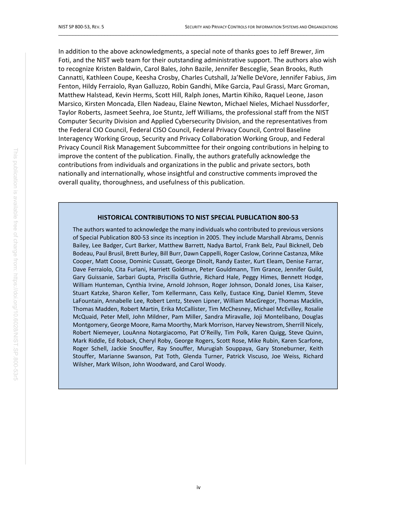
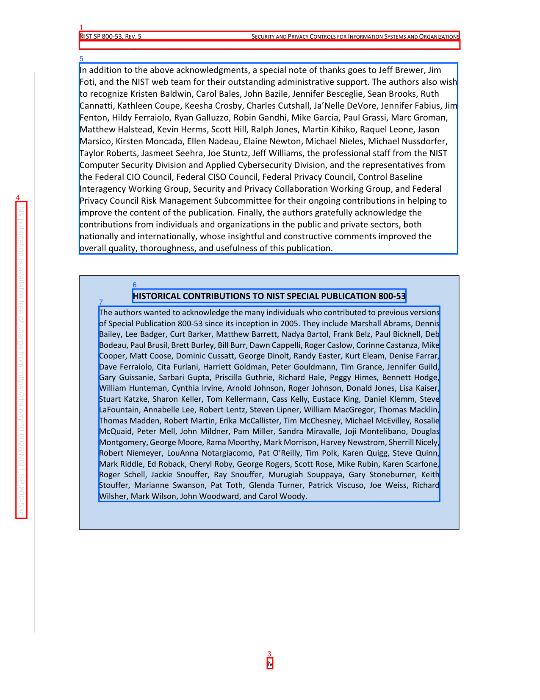

PDF Lab Second-Pass Page Review
Before Evidence


Selected Candidates
cand:p0006:0000:side_chromeside_chrome
{
"bbox": [
0.14705882352941177,
0.04473802296802251,
0.8507378272760927,
0.05821938948197798
],
"block_id": "actual:p6:block:0",
"block_index": 0,
"candidate_id": "cand:p0006:0000:side_chrome",
"confidence": 0.8,
"detection_reason": [
"block_type:header_footer_noise",
"preset_type:side_chrome",
"hardening_interest",
"boundary_geometry",
"frontmatter_or_early_page"
],
"features": {
"bbox_area": 0.009487,
"block_type": "header_footer_noise",
"has_toc_entries": false,
"semantic_role": "page_chrome",
"source_type": "Header",
"text_length": 94
},
"json_pointer": "/pages/5/blocks/0",
"page_index": 5,
"page_number": 6,
"pdf_id": "NIST_SP_800-53r5:fc63bcd61715d018",
"preset_type": "side_chrome",
"text_excerpt": "NIST SP 800-53, REV. 5 SECURITY AND PRIVACY CONTROLS FOR INFORMATION SYSTEMS AND ORGANIZATIONS"
}cand:p0006:0001:side_chromeside_chrome
{
"bbox": [
0.14705882352941177,
0.05679397390346334,
0.8517353332120609,
0.07054738324097913
],
"block_id": "actual:p6:block:1",
"block_index": 1,
"candidate_id": "cand:p0006:0001:side_chrome",
"confidence": 0.8,
"detection_reason": [
"block_type:header_footer_noise",
"preset_type:side_chrome",
"hardening_interest",
"boundary_geometry",
"frontmatter_or_early_page"
],
"features": {
"bbox_area": 0.009692,
"block_type": "header_footer_noise",
"has_toc_entries": false,
"semantic_role": "page_chrome",
"source_type": "Header",
"text_length": 97
},
"json_pointer": "/pages/5/blocks/1",
"page_index": 5,
"page_number": 6,
"pdf_id": "NIST_SP_800-53r5:fc63bcd61715d018",
"preset_type": "side_chrome",
"text_excerpt": "_________________________________________________________________________________________________"
}cand:p0006:0002:side_chromeside_chrome
{
"bbox": [
0.4950000039892259,
0.939856018682923,
0.5049808477264603,
0.9550605542732008
],
"block_id": "actual:p6:block:2",
"block_index": 2,
"candidate_id": "cand:p0006:0002:side_chrome",
"confidence": 0.8,
"detection_reason": [
"block_type:header_footer_noise",
"preset_type:side_chrome",
"hardening_interest",
"boundary_geometry",
"frontmatter_or_early_page"
],
"features": {
"bbox_area": 0.000152,
"block_type": "header_footer_noise",
"has_toc_entries": false,
"semantic_role": null,
"source_type": "PageNumber",
"text_length": 2
},
"json_pointer": "/pages/5/blocks/2",
"page_index": 5,
"page_number": 6,
"pdf_id": "NIST_SP_800-53r5:fc63bcd61715d018",
"preset_type": "side_chrome",
"text_excerpt": "iv"
}cand:p0006:0003:side_chromeside_chrome
{
"bbox": [
0.0296323533151664,
0.28780303338561397,
0.049705879361021756,
0.7406287915778883
],
"block_id": "actual:p6:block:3",
"block_index": 3,
"candidate_id": "cand:p0006:0003:side_chrome",
"confidence": 0.8,
"detection_reason": [
"block_type:header_footer_noise",
"preset_type:side_chrome",
"hardening_interest",
"boundary_geometry",
"frontmatter_or_early_page"
],
"features": {
"bbox_area": 0.00909,
"block_type": "header_footer_noise",
"has_toc_entries": false,
"semantic_role": null,
"source_type": "Boilerplate",
"text_length": 92
},
"json_pointer": "/pages/5/blocks/3",
"page_index": 5,
"page_number": 6,
"pdf_id": "NIST_SP_800-53r5:fc63bcd61715d018",
"preset_type": "side_chrome",
"text_excerpt": "This publication is available free of charge from: https://doi.org/10.6028/NIST.SP.800 -53r5"
}cand:p0006:0004:texttext
{
"bbox": [
0.14702282076567605,
0.08994257570517183,
0.8475234087775735,
0.36282051934136283
],
"block_id": "actual:p6:block:4",
"block_index": 4,
"candidate_id": "cand:p0006:0004:text",
"confidence": 0.8,
"detection_reason": [
"block_type:paragraph_block",
"preset_type:text",
"frontmatter_or_early_page",
"long_text_region"
],
"features": {
"bbox_area": 0.191151,
"block_type": "paragraph_block",
"has_toc_entries": false,
"semantic_role": null,
"source_type": "Body",
"text_length": 1442
},
"json_pointer": "/pages/5/blocks/4",
"page_index": 5,
"page_number": 6,
"pdf_id": "NIST_SP_800-53r5:fc63bcd61715d018",
"preset_type": "text",
"text_excerpt": "In addition to the above acknowledgments, a special note of thanks goes to Jeff Brewer, Jim Foti, and the NIST web team for their outstanding administrative support. The authors also wish to recognize Kristen Baldwin, Carol Bales, John Bazile, Jennifer Besceglie, Sean Brooks, Ruth Cannatti, Kathleen Coupe, Keesha Crosby, Charles Cutshall, Ja\u2019Nelle DeVore, Jennifer Fabius, Jim Fenton, Hildy Ferraiolo, Ryan Galluzzo, Robin Gandhi, Mike Garcia, Paul Grassi, Marc Groman, Matthew Halstead, Kevin Herm"
}cand:p0006:0005:referencereference
{
"bbox": [
0.24578431073357077,
0.41286838415897253,
0.7517472809436274,
0.4321111428617227
],
"block_id": "actual:p6:block:5",
"block_index": 5,
"candidate_id": "cand:p0006:0005:reference",
"confidence": 0.8,
"detection_reason": [
"block_type:reference",
"preset_type:reference",
"hardening_interest",
"frontmatter_or_early_page"
],
"features": {
"bbox_area": 0.009736,
"block_type": "reference",
"has_toc_entries": false,
"semantic_role": "reference_continuation",
"source_type": "Body",
"text_length": 59
},
"json_pointer": "/pages/5/blocks/5",
"page_index": 5,
"page_number": 6,
"pdf_id": "NIST_SP_800-53r5:fc63bcd61715d018",
"preset_type": "reference",
"text_excerpt": "HISTORICAL CONTRIBUTIONS TO NIST SPECIAL PUBLICATION 800-53"
}cand:p0006:0006:texttext
{
"bbox": [
0.18330036736781302,
0.43754986079052244,
0.8143574833090789,
0.7166170833086727
],
"block_id": "actual:p6:block:6",
"block_index": 6,
"candidate_id": "cand:p0006:0006:text",
"confidence": 0.8,
"detection_reason": [
"block_type:paragraph_block",
"preset_type:text",
"frontmatter_or_early_page",
"long_text_region"
],
"features": {
"bbox_area": 0.176107,
"block_type": "paragraph_block",
"has_toc_entries": false,
"semantic_role": null,
"source_type": "Body",
"text_length": 1616
},
"json_pointer": "/pages/5/blocks/6",
"page_index": 5,
"page_number": 6,
"pdf_id": "NIST_SP_800-53r5:fc63bcd61715d018",
"preset_type": "text",
"text_excerpt": "The authors wanted to acknowledge the many individuals who contributed to previous versions of Special Publication 800-53 since its inception in 2005. They include Marshall Abrams, Dennis Bailey, Lee Badger, Curt Barker, Matthew Barrett, Nadya Bartol, Frank Belz, Paul Bicknell, Deb Bodeau, Paul Brusil, Brett Burley, Bill Burr, Dawn Cappelli, Roger Caslow, Corinne Castanza, Mike Cooper, Matt Coose, Dominic Cussatt, George Dinolt, Randy Easter, Kurt Eleam, Denise Farrar, Dave Ferraiolo, Cita Furla"
}Review Validation
{
"candidate_count": 7,
"errors": [],
"expected_candidate_ids": [
"cand:p0006:0000:side_chrome",
"cand:p0006:0001:side_chrome",
"cand:p0006:0002:side_chrome",
"cand:p0006:0003:side_chrome",
"cand:p0006:0004:text",
"cand:p0006:0005:reference",
"cand:p0006:0006:text"
],
"ok": true,
"page_case": {
"case_id": "page_case_0001_p0006",
"page_number": 6
},
"schema": "pdf_lab.second_pass.review_validation.v1",
"seen_candidate_ids": [
"cand:p0006:0000:side_chrome",
"cand:p0006:0001:side_chrome",
"cand:p0006:0002:side_chrome",
"cand:p0006:0003:side_chrome",
"cand:p0006:0004:text",
"cand:p0006:0005:reference",
"cand:p0006:0006:text"
]
}
Page Case
{
"candidate_ids": [
"cand:p0006:0000:side_chrome",
"cand:p0006:0001:side_chrome",
"cand:p0006:0002:side_chrome",
"cand:p0006:0003:side_chrome",
"cand:p0006:0004:text",
"cand:p0006:0005:reference",
"cand:p0006:0006:text"
],
"case_id": "page_case_0001_p0006",
"forced_by_human_annotation": true,
"page_index": 5,
"page_number": 6,
"preset_counts": {
"reference": 1,
"side_chrome": 4,
"text": 2
},
"selection_probability_basis": {
"candidate_count_on_page": 7,
"candidate_share_estimate": 1.0,
"forced_page": true,
"method": "forced_human_annotation",
"page_score": 27.0,
"total_candidate_count": 7,
"total_page_score": 27.0,
"weighted_page_score_inclusion_estimate": 1.0
},
"selection_probability_estimate": 1.0,
"selection_reason": [
"human_annotated_page",
"high_risk_preset",
"high_risk_candidate",
"document_position_stratum",
"boundary_geometry",
"high_candidate_score"
],
"selection_score": 27.0,
"strata": [
"geometry:boundary",
"position:first_20",
"position:frontmatter",
"preset:reference",
"preset:side_chrome",
"preset:text",
"risk:high"
]
}
Artifacts
- state.json
- sampled_candidate_manifest.json
- page_before.json
- page_before.png
- page_candidates.png
- selected_candidates.json
- candidate_presets.json
- review_request.json
- review_request_validation.json
- scillm_orchestrator_page_dag_spec.json
- scillm_orchestrator_page_dag_spec_validation.json
- scillm_orchestrator_page_submission.json
- scillm_orchestrator_page_submission_validation.json
- review_validation.json
- scillm_review_preflight.json
- scillm_review_receipt.json
- review_response.json
- scillm_page_orchestrator_run_request.json
- scillm_page_orchestrator_run_validation.json
- scillm_page_orchestrator_run_receipt.json
- patch_baseline.json
- patch_evidence_workspace.json
- patch_request.json
- patch_validation.json
- patch_attempts_ledger.json
- patch_attempt_01_validation.json
- patch_attempt_01_prompt_contract.json
- patch_attempt_01_prompt_review_payload.txt
{kind=link}
{kind=link}